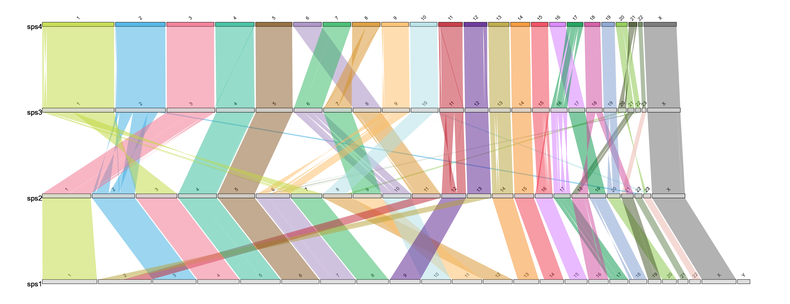

R package to draw synteny plots in three different styles
This package has been developed by Joana Damas (joanadamas@gmail.com), Sarah Quigley (slq4@kent.ac.uk), Denis Larkin (dlarkin@rvc.ac.uk) and Marta Farré (m.farre-belmonte@kent.ac.uk)
It has been tested in Windows 10 R v4.0.3, Windows 11 with R v4.1.1 and v4.2.2 and MAC OS Ventura 13.1
To install:
Using CRAN
install.packages("syntenyPlotteR")
library(syntenyPlotteR)Using github
install.packages("devtools")
library(devtools)
devtools::install_github("Farre-lab/syntenyPlotteR")
library(syntenyPlotteR)Input files
Input Alignment file
We provide a function to modify the output of DESCHRAMBLER or any other synteny tool that creates this type of file:
Alignment output file format for reformat.syntenyData function

Otherwise, you can provide your input Alignment file separated by tabs
DO NOT include a header line
- Reference chromosome ID
- Reference start position
- Reference end position
- Target chromosome
- Target start position
- Target end position
- Orientation
- Reference species ID
- Target species ID
Example input alignment file format for the three functions

Chromosome Length file for draw.ideogram and draw.linear functions
Please provide a file containing all aligned species in order from newest species – top of file – to ancestor – end of file, following this format, separated by tabs
DO NOT include a header line
- Chromosome ID
- Chromosome length
- Species ID
Example file format

Reformatting alignment data
The syntenyPlotteR package includes a function to reformat alignment synteny data such as from DESCHRAMBLER or inferCARs - this does not curate files only reformats it
The function outputs a text file containing the reformatted alignment data As default the function saves the file to a temporary directory, this can be overridden using the directory parameter i.e. directory = "path/to/directory".
Usage
library(syntenyPlotteR)
reformat.syntenyData("file_data", "output.filename", reference.species = "reference.sps", target.species = "target.sps")- file_data - alignment output file from DESCHRAMBLER/infeCARs
- output.filename - output file name for reformatted data in a character string
There are optional parameters for some customization of this function:
- reference.species - reference species ID as character string for final output table
- target.species - target species ID as character string for final output table
- directory - directory where to save text file i.e.
directory = "path/to/directory"
Example code using data files in inst/extdata/
reformat.syntenyData("example_map_1.map", "reformatted.data")Evolution Highway style
Usage
library(syntenyPlotteR)
draw.eh("output", chrRange, "data_file", fileformat = "png", colour = "lightblue", inverted.colour = "lightpink", w = 5.5, h = 10, ps = 10)- output - String assigned to name of output file name
- chrRange - The range of chromosomes of the reference species this is entered as either a single number i.e. 1 or a range of numbers i.e. 1:22. Note: if you are inputting sex chromosomes or chromosomes with characters in the name input a concatenated string i.e. c(1,2,3,“X”)
- data_file - File containing the syntenic blocks of alignments of one or more target species aligned to a single reference
There are optional parameters for some customization of this function:
- fileformat - format for saving the image i.e. png or pdf, parameter use:
fileformat = "pdf"(the default value is “png”) - colour - colour of the syntenic blocks (not inverted blocks), parameter use:
colour = "red"(the default value is “lightblue”, see Rcolour pallette for colour options) - inverted.colour - colour of the inverted syntenic blocks, parameter use:
inverted.colour = "blue"(the default value is “lightpink”, see Rcolour pallette for colour options) - w - The width of the image created can be changed by using:
w = 5.5(default) - h - The height of the image created can be changed by using:
h = 10(default) - ps - The point size of the image created can be changed by using:
ps = 10(default) - directory - directory where to save image file i.e.
directory = "path/to/directory"(default is save to temporary directory)
Example code using data files in inst/extdata/
Example output

Chromosome painting style
Usage
library(syntenyPlotteR)
draw.ideogram("file_data", "sizefile", "output", fileformat = "png", colours = colours.default, w=8.5, h=10, ps=5)- file_data - file containing the syntenic blocks
- sizefile - tab separated file of all chromosome, scaffold, or contig lengths and the species identifier, in order from first target species in the alignment files followed by the first reference species in the alignment files – top of file – to the last target species and reference species in the alignment files – end of file.
- output - string assigned to the output file name
There are optional parameters for some customization of this function:
- fileformat - format for saving the image i.e. png or pdf, parameter use:
fileformat = "pdf"(the default value is “png”) - colours - colours to assign to the ideograms in a concatenated string of chromosome IDs with assigned colour values which can be found with R colour Pallette, paramter use:
colours = c("1" = "red", "2" = "blue", "3" = "green","4" = "orange", "5" = "purple","X" = "grey")if no colours are assigned default values will be used but colours MUST be assigned to all chromosomes - w - The width of the image created can be changed by using:
w = 5.5(default) - h - The height of the image created can be changed by using:
h = 10(default) - ps - The point size of the image created can be changed by using:
ps = 10(default) - directory - directory where to save image file i.e.
directory = "path/to/directory"(default is save to temporary directory)
Target is the species which chromosomes will be painted. Reference will be used for painting and diagonals. Chromosomes will be in the same order as in the target sizes file.
Example code using data files in inst/extdata/
draw.ideogram("example_alignment_1.txt", "example_lengths.txt", "example.ideogram")Example output
Linear style
Usage
library(syntenyPlotteR)
draw.linear(output, sizefile, ..., fileformat = "png", colours = colours.default, w=13, h=5, opacity = .5)- output - string assigned to the output file name
- sizefile - tab separated file of all chromosome, scaffold, or contig lengths and the species identifier, in order from first target species in the alignment files followed by the first reference species in the alignment files – top of file – to the last target species and reference species in the alignment files – end of file.
- … - files containing the syntenic blocks (one file per alignment, in order from first target/reference (most recent species pairwise alignment in ancestral reconstruction data) alignment file to last target/reference (ancestor pairwise alignment in ancestral reconstruction data) alignment file)
Please ensure any species identifiers used between length and alignment files are matching (same identifiers and letter case)
There are optional parameters for some customization of this function:
- fileformat - format for saving the image i.e. png or pdf, parameter use:
fileformat = "pdf"(the default value is “png”) - colours - colours to assign to the bands between ideograms in a concatenated string of chromosome IDs with assigned colour values which can be found with R colour Pallette, paramter use:
colours = c("1" = "red", "2" = "blue", "3" = "green","4" = "orange", "5" = "purple","X" = "grey")if no colours are assigned default values will be used but colours MUST be assigned to all chromosomes - w - The width of the image created can be changed by using:
w = 5.5(default) - h - The height of the image created can be changed by using:
h = 10(default) - opacity - the opacity of the ribbons can be changes using inputting:
opacity = .5(default) - directory - directory where to save image file i.e.
directory = "path/to/directory"(default is save to temporary directory)
Example code using data files in inst/extdata/
draw.linear("example_linear", "example_lengths.txt", "example_alignment_1.txt", "example_alignment_2.txt", "example_alignment_3.txt")Example output
